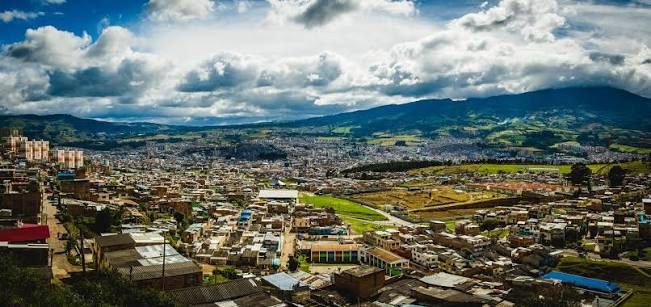
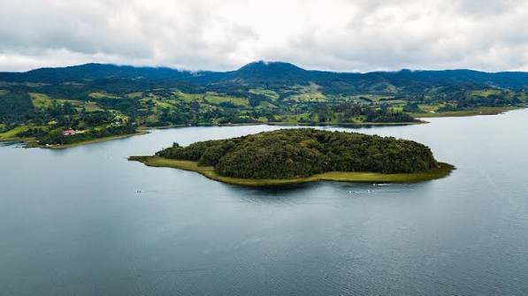
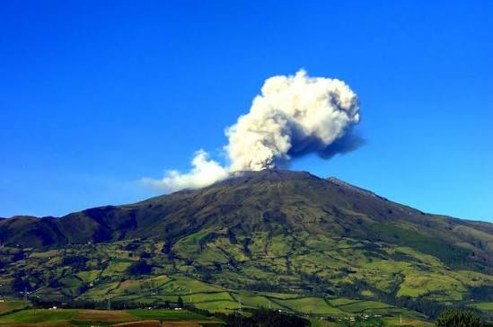
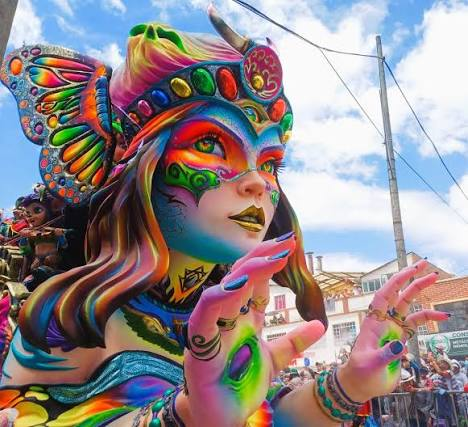
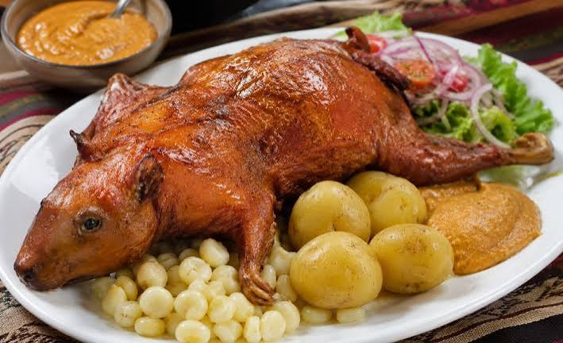

Santuario de Las Lajas
Está ubicado cerca de Ipiales y es uno de los lugares más reconocidos de Nariño por su arquitectura y paisaje.
Un lugar lleno de cultura, paisajes y tradición
Nariño es un departamento ubicado al suroccidente de Colombia. Se destaca por sus montañas, sus paisajes naturales, sus fiestas y la amabilidad de su gente. Su capital es San Juan de Pasto.

Está ubicado cerca de Ipiales y es uno de los lugares más reconocidos de Nariño por su arquitectura y paisaje.

Es un lugar natural rodeado de montañas y vegetación, donde se puede disfrutar de la tranquilidad del paisaje.

Es uno de los símbolos naturales de Nariño y se encuentra cerca de la ciudad de Pasto.

En Nariño se conservan muchas tradiciones. Una de las más conocidas es el Carnaval de Negros y Blancos, que se celebra principalmente en Pasto con música, disfraces, comparsas y carrozas.

La gastronomía nariñense tiene platos muy conocidos, como el cuy asado, el locro y las empanadas de añejo. Estas comidas hacen parte de las costumbres de la región.
Nariño es una tierra de paisajes hermosos, gente trabajadora y tradiciones que vale la pena conocer y cuidar.